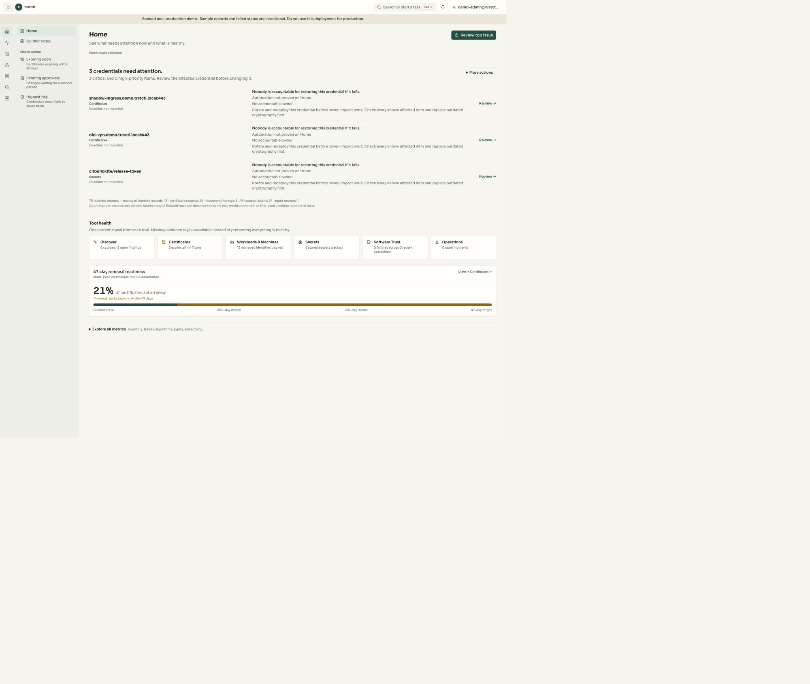
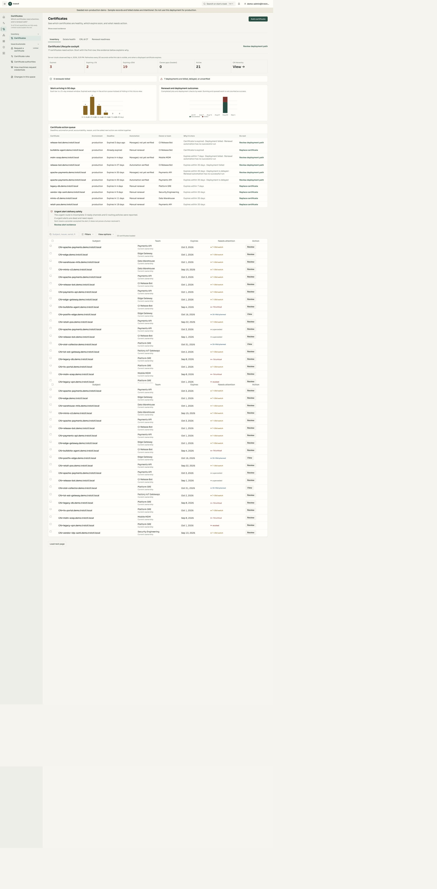
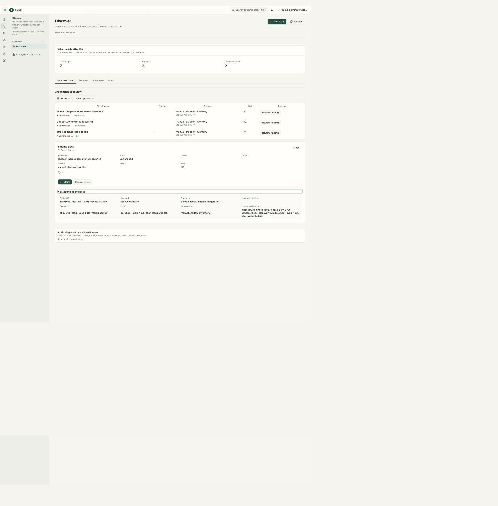
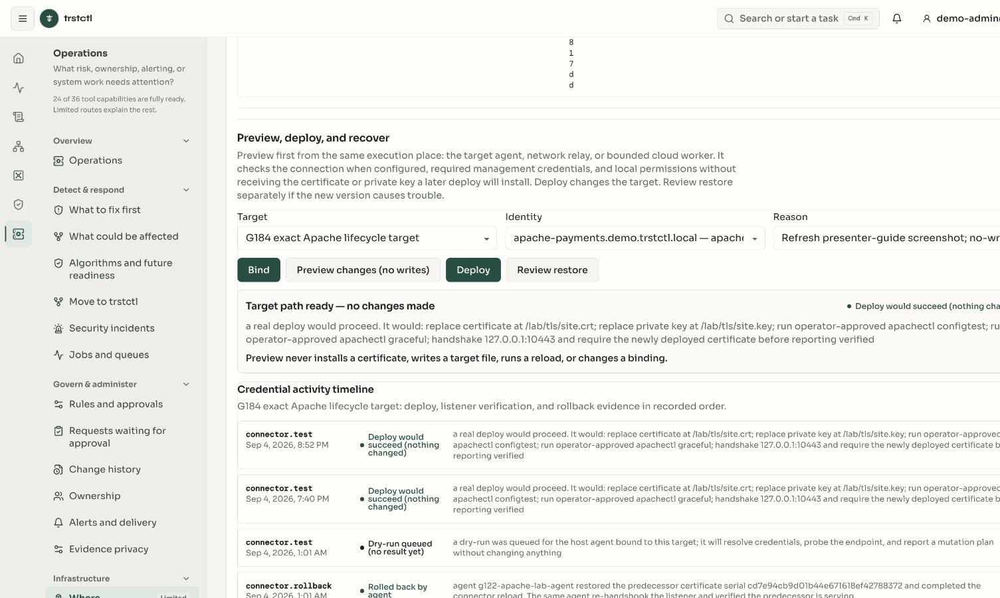
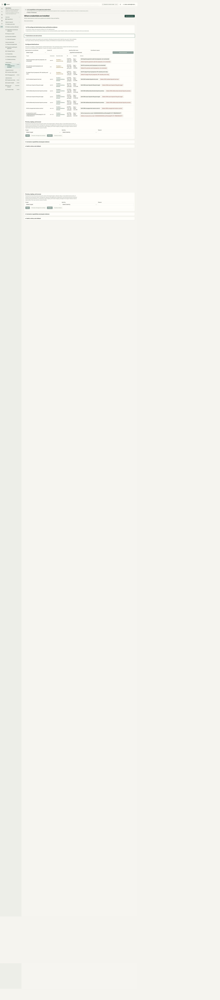
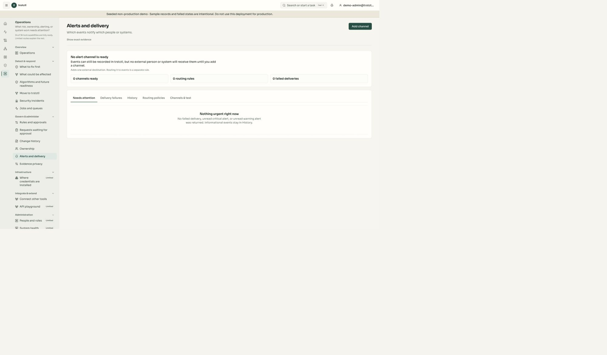
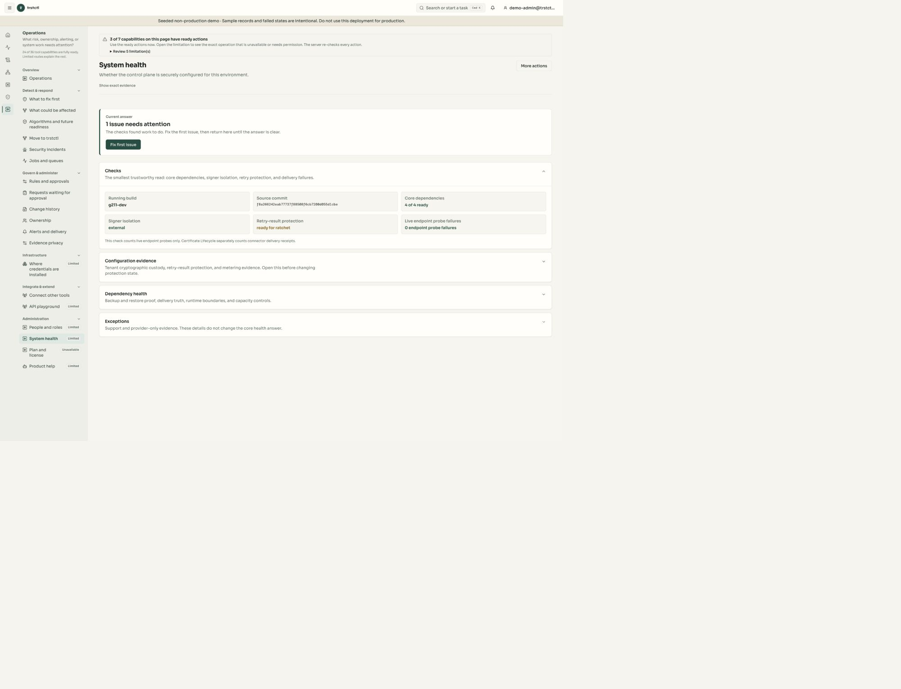
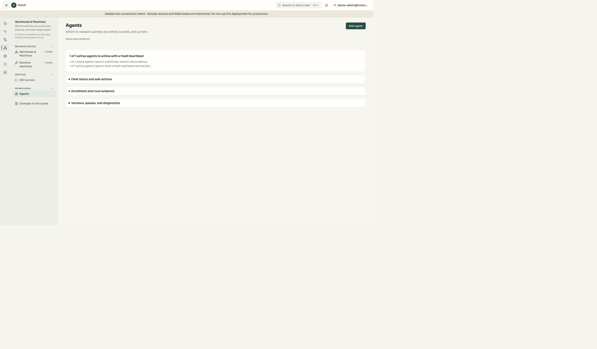
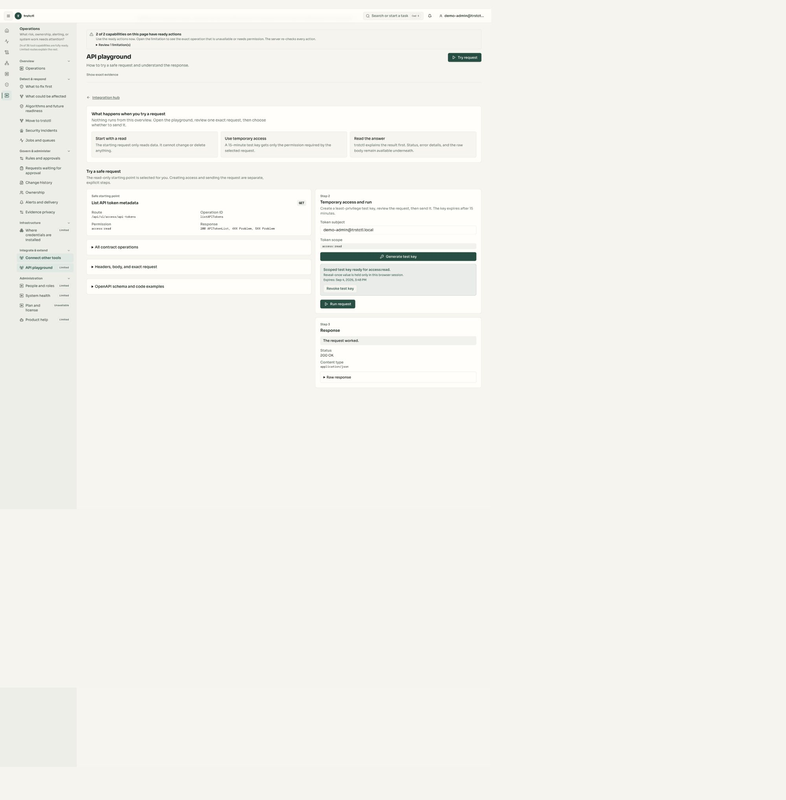

Stop renewing web certificates by hand
Apache or IIS: find the endpoint, keep its chosen CA, deliver a replacement, verify the listener, and show the next renewal.
5-minute pitch · 15-minute proof · 40-minute deep diveSolution engineer field guide · CLM first, every machine credential next
Choose a customer problem, not a menu tour. Five minutes to explain the value, fifteen to prove one outcome, forty to examine the architecture. Separate labs cover IIS, Apache, internal PKI, devices, and managed service providers.
This page is the guide, not the trstctl application. Every dark-green button opens the real app in a separate tab.
Start here · the no-bluff presenter briefing
Your job is to keep one simple story straight: a machine has a credential, a person or team owns the machine, a certificate authority signs the replacement, an execution runtime delivers it, and an independent check proves what the listener actually serves. If you cannot prove one link, call that link pending. That answer builds more trust than guessing.
“Prepared” means configured, not contacted. “Queued” means accepted, not completed. A connector receipt is not a TLS handshake. “Implemented” is not the same as qualified on the customer's exact product version.
A certificate is a signed identity card for a machine. The CA is the office that signs it. The private key is the secret that proves the machine owns that card. Renewal creates a replacement card before the old one expires. trstctl coordinates those steps; it does not require the customer to abandon the CA they already trust.
Do not improvise. Say: “I want to answer from evidence. Let us open the exact capability or mark it for a controlled follow-up.” Record the target version and requested operation. Never open secrets, raw private keys, bearer tokens, or customer data to rescue a demo.
Current rehearsal card · complete before presenting
Not current proof until you complete the checks below. This card describes the build and environment you intend to show now. It does not inherit a pass from the historical screenshots.
?candidate=<Git SHA>.recorded screenshot evidence · sanitized
This appendix is context, not current-candidate proof. Every screenshot repeats its candidate, observation date, environment, and evidence level beside the image.
Evidence snapshot candidate: g211, source commit f8a266242eab77737f88508f6cb7200d055d1cbe, observed 4 September 2026. The control plane reported build g211-dev, four of four core dependencies ready, an external signer, and zero live endpoint probe failures.
Passed live on that snapshot: authenticated Home, Discovery, Certificates, Alerts, Agents, System health, an API-playground GET /api/v1/access/api-tokens returning 200 OK, temporary-key revocation, and an Apache target preview reaching Target path ready — no changes made.
Recorded earlier on the same retained lab: g184/g185/g188 proved Apache issue, deploy, TLS listener readback, renewal to a distinct certificate, effect-free restore review, agent-executed rollback, CLI parity, and phone layout. Those are labeled recorded evidence, not a fresh g211 deployment.
Running-candidate boundary: the ?candidate= value below tells you which live build to compare in System health. It never relabels these g211 screenshots as newer evidence. If the running candidate differs, rehearse every live claim again or say “recorded g211 evidence.”
Still not claimed: a live IIS host, live F5 appliance, external vendor CA issuance on this exact candidate, a configured alert sink, or whole-product release readiness. “Not rehearsed on this candidate” remains the required label for those scenarios.


Apache or IIS: find the endpoint, keep its chosen CA, deliver a replacement, verify the listener, and show the next renewal.
5-minute pitch · 15-minute proof · 40-minute deep diveOne named Client SSL profile, an in-segment relay, the intended CA, and verification through the actual virtual service. Add HA only when both peers are rehearsed.
F5 · 5 / 15 / 40 minutesGoverned root and intermediate creation, a requester-held key, approval, issuance, and a checked TLS endpoint. This is optional—not a migration requirement.
Internal CA pitch and labTwo isolated customers, different owners and issuers, delegated access, an expiring endpoint, and customer-scoped evidence.
MSP pitch and labUse one actual EST or SCEP client. Show initial trust, certificate renewal, rejection, and revocation—not a protocol settings page alone.
Device trust pitch and labTenant-scoped CLI/API access, safe retries, policy boundaries, durable job evidence, and readback of the actual outcome.
Machine-facing pitch and labBounded network discovery plus cloud certificate or secret-store inventory. Explain which sources collect live data and which accept supplied observations.
Discovery and NHI pitchPreparation is outside the pitch clock
Use a disposable, operator-owned lab. A Linux Compose stack does not supply a Windows IIS machine or an F5 appliance. Provision those separately. Record exact product, agent, operating-system, application, and device versions before rehearsal.
Prepared connector targets are not contacted targets. The shipped seed creates clearly labeled Apache, IIS, and F5 destination records so the read-only pitch has concrete objects. The recorded g211 rehearsal had one active execution runtime and a successful no-write Apache preview; that does not prove the running candidate, IIS, F5, a deployment, or a listener change. A presenter must say “prepared, not contacted” for every target that lacks candidate-specific runtime and independent listener proof.
demo-admin@trstctl.local applies only to the shipped demo seed. No production credentials, browser certificate bypass, or disabled tenant isolation.agent_channel.claimable_job_kinds. Set --relay-claim, the exact --host-exec-profile, and an encrypted --host-rollback-dir for host rollback. A heartbeat alone does not establish execution readiness.| Target | Operator preparation | Proof / limit |
|---|---|---|
| Apache | Install the host agent beside the TLS site. Approve cert_path, key_path, and the profile for config test and graceful reload. Configure the intended TLS verification address. | The adapter writes files, runs apachectl configtest, then apachectl graceful. A failed config test avoids reload but does not prove the old files stayed unchanged. Check the saved predecessor and the listener. |
| IIS | Use a real Windows host with the intended HTTP.sys binding. Scope the PowerShell/netsh profile, binding, import directory, certificate store, and application ID. Protect the transient import area; the adapter removes its temporary PFX/password files. | The current adapter imports the certificate, deletes the old binding, then adds the new one. No zero-downtime claim; rehearse the exact binding and failure recovery. Do not infer broad SNI, central certificate store, or farm support. |
| F5 | Use an operator-owned BIG-IP lab, in-segment relay, credential reference, and named Client SSL profile. Record partition and HA layout. Rehearse both peers if making an HA claim. | Adapter/API-double tests cover deploy, readback, and object-rebind rollback. They do not qualify a BIG-IP release. The current HA path uses a shared credential; per-peer credentials and broad partition coverage are not demonstrated. |
Exact configuration and restrictions: deployment connector runbook, operator configuration, and published support matrix. That matrix covers 13 migration-program families, not all 24 connectors.
5 minutes · value pitch · choose Apache OR IIS
trstctl finds the certificate, shows who owns it, coordinates replacement with your chosen CA, and checks the endpoint where customers actually connect.
Audience: application owner, infrastructure lead, or prospective design partner. Prepared object: one lab web service, one owner, one saved scan, one rehearsed delivery. Use the existing issuer name throughout. If external-CA automation has not been rehearsed, describe it as the intended workflow, not a completed capability.
Home is the executive signal; Certificates is the exact queue. On g211, Home's top cards intentionally say that deadline or ownership may be unreported. Do not point at Home and invent an owner. Open Certificates to show exact expiry, owner, and delivery state.
| Clock | Show / say | What earns the claim |
|---|---|---|
| 0:00–0:35 | Home: “This is the control-tower view. It tells me where risk or missing accountability needs attention.” | Point to the served count only. Do not assign a name, owner, deadline, or cause that the card does not show. |
| 0:35–1:20 | Certificates: choose one action-queue row. “This is the exact certificate, its time window, its owner, and whether delivery is manual, delayed, or failed.”Name the displayed row. Expiry, ownership, and deployment are separate facts; a certificate can be expiring without a failed renewal. | |
| 1:20–2:05 | Discover: click Review finding, then Exact finding evidence. “We know where this observation came from before we act.”Show host/port or resource, source, collection time, run/provenance, finding ID, and fingerprint. No issuer is shown in this finding panel; get issuer detail from certificate inventory when it exists. | |
| 2:05–3:25 | Where credentials are installed: open Destinations and safe actions. Select only the rehearsed Apache target and identity, enter a reason, then choose Preview changes (no writes).Wait for Target path ready — no changes made. A status of Preview queued — no result yet is not success. The preview may create a durable job/receipt, but it must not change the target. | |
| 3:25–4:15 | In a prepared lab, perform the rehearsed deploy once; otherwise show clearly labeled recorded evidence. Follow delivery and independent listener verification.Compare expected fingerprint with observed fingerprint on the exact listener. A queued job is still waiting. | |
| 4:15–5:00 | Alerts and delivery, then next renewal and audit. No alert channel is configured in the shipped seed, so show the unresolved delivery prerequisite rather than saying an owner already received it.A live pitch earns the claim only with a controlled-sink delivery receipt and the next scheduled action. Close: “Which endpoint and alert channel should we validate together?” |
Home, then Certificates. Use one row from the action queue.
“Home tells us there is work. Certificates tells us exactly which certificate, when, who owns it, and what delivery state is known.”
A named certificate with an expiry window, owner, and delivery/manual state.
Choose another visible row. Do not manufacture an owner or a deadline from an empty field.
Discover → Review finding → Exact finding evidence.
“This is evidence from a named source and run, not a spreadsheet row we silently trusted.”
Finding ID, source, timestamp, run/provenance, and public fingerprint metadata.
Call it a supplied seed observation. No issuer is shown here; use Certificates for certificate detail.
Where credentials are installed → Destinations and safe actions → target → identity → reason → Preview changes (no writes).
“The execution runtime checks its approved paths, commands, and listener before any credential is delivered.”
Target path ready — no changes made. The plan names certificate/key paths, config test, graceful reload, and listener handshake.
If still queued, open Jobs and queues and verify the edge runtime. Do not click Deploy to make the spinner go away.
Alerts and delivery. In a qualified lab, also show the next renewal and audit evidence.
“A lifecycle is not automated until the endpoint is checked, the next action is scheduled, and the right person or system can be notified.”
In the shipped seed: zero ready channels and zero routing rules. In a prepared lab: a controlled-sink receipt.
Say that events remain recorded but no external recipient is configured. Ask which channel the customer wants to validate.


If blocked: say “The setup/queue/verification is blocked at this step; the certificate has not been proven live.” Use a dated rehearsal only if one exists. Never substitute a green inventory badge for endpoint proof.
15 minutes · solution proof · one complete lifecycle
Prerequisite: all lab preflight steps passed, including an issuer-preserving renewal path. This is not a promise that a customer can install everything in fifteen minutes. Setup is rehearsed in advance; show enough of it to make the effort honest.
| Clock | Operator journey | Visible result |
|---|---|---|
| 0–2 | Agree the service, owner, issuer, and acceptable maintenance behavior. Capture the initial handshake and application response.Baseline: fingerprint, chain, expiry, hostname validation, timestamp and vantage. | |
| 2–4 | Open the saved discovery source. Show CIDR/host scope, ports, relay and readiness; run only the approved narrow scan.The finding links to the same certificate and exact target, not a similarly named seeded object. | |
| 4–7 | Review owner, profile, key custody, chosen issuer, destination and target permissions. Show the actual current forms, including operator work outside the UI.Policy decision and target readiness. An owner UUID or JSON field is an acknowledged UX gap, not hidden setup magic. | |
| 7–10 | Submit one approved issuance/deployment operation. If approval is required, use a separate authorized approver.Issuance result → delivery result → listener fingerprint. The issuer stays the selected CA; key material never enters screenshots. | |
| 10–12 | Use the rehearsed supported renewal trigger and follow the replacement. Do not change the computer clock or bypass minimum lifetimes.A new certificate with the correct issuer and a later validity window, then observed endpoint proof and the next schedule. | |
| 12–14 | Show a pre-rehearsed failed attempt and recovery, or execute a safe approved lab fault. Retry the same logical request with its original key.Original failure remains, no duplicate issuance, supported recovery restores the intended fingerprint. | |
| 14–15 | Show alert delivery to the owner and an evidence export.Customer can explain who owns this service, what happens next, and how a failure is noticed. |
System health, Agents, Certificates, and Where credentials are installed.
Nothing yet. This is presenter preflight, not customer theater.
Matching candidate, healthy dependencies, a current execution heartbeat, one enabled rehearsed target, and an eligible identity.
Use recorded evidence or the read-only tour. Never change the customer-facing story while debugging.
Capture the listener outside trstctl, then open Discover and the exact source/run/finding.
“This is what the application serves before trstctl acts, and this is the observation that connected it to inventory.”
Before fingerprint, chain, hostname result, HTTP marker, timestamp, vantage, source, ports, and run ID.
Stop the live mutation. A similarly named seed record is not the target you just measured.
Certificates, Ownership, Profiles, issuer capability detail, key-custody evidence, then the target.
“This owner accepts the change; this CA signs it; this policy limits it; this is where the key is generated; this runtime can touch only these paths and commands.”
Exact owner, selected issuer/integration, profile version, key origin/exportability statement, target ID, and approved execution scope.
Disclose the manual setup or UI gap. Do not silently switch to the built-in CA or control-plane key generation.
Preview first. Review the immutable request. Use the authorized mutation only in the prepared lab and follow Jobs and queues.
“The preview is effect-free. The approved operation creates durable intent. A successful queue response still is not delivery.”
One operation key, one issuance result, one connector result, and a terminal verified state tied to the same target.
Preserve the failure. Reconcile an ambiguous CA submission before retrying; use the same key only for the same logical action.
Endpoint verification and certificate lineage; repeat the external handshake from the declared vantage.
“The expected certificate and the certificate a new connection sees now match. The application still answers.”
Expected fingerprint equals observed fingerprint, hostname and chain validate, application marker returns, and predecessor/successor are distinct.
Do not call it deployed. Separate issuance, management delivery, and listener verification to locate the failed stage.
Use a pre-approved bad target or retained failure, then Review restore. Execute recovery only when the predecessor is valid and the lab permits it.
“We retain the failed attempt, isolate its queue lane, and restore only a proven predecessor.”
Denied or failed evidence, no cross-target starvation, reviewed recovery, terminal rollback receipt, and an independent restored-listener handshake.
A connector without executable rollback must refuse. Never restore a revoked or expired predecessor to create a green demo.
Alerts and delivery, Audit, then the next scheduled lifecycle action.
“This is who learns about failure, what evidence they receive, and when automation acts again.”
A controlled-sink receipt, routing policy, accountable owner, audit chain, and future schedule in a fully prepared lab.
On the pristine seed, say zero channels and zero routes. Close by proposing one customer-owned alert sink and endpoint for validation.


Install the documented trstctl-cli. Obtain a least-privilege lab token through the approved setup path; inject it through the protected process environment. Set TRSTCTL_SERVER, TRSTCTL_CA_FILE and the authenticated tenant context. The commands below read metadata; they do not configure or deploy a target.
trstctl-cli capabilities list
trstctl-cli issuers capabilities
trstctl-cli external-cas list
trstctl-cli endpoints key-custody
trstctl-cli endpoints verifications
trstctl-cli certificates list --limit 20For mutations, use the command-specific --help and the pinned API schema. Keep one stable idempotency key per logical action across retries. Do not use a fresh key simply because an issuance response timed out; first reconcile whether the CA already issued it.
40 minutes · architecture deep dive · Apache, IIS, or F5
| Clock | Discussion and demonstration | Proof to retain |
|---|---|---|
| 0–5 | Customer topology, issuers, private-key location, tenants, ownership, ports and renewal objectives.One bounded architecture drawing with trust boundaries, not an unqualified integration-logo wall. | |
| 5–12 | Discover and bind the exact endpoint. Explain host-agent versus network-relay versus cloud-control-plane execution.Source readiness, execution identity, scope and restrictions. F5 uses an in-segment relay, not an agent installed on BIG-IP. | |
| 12–20 | Show the issuance request, policy/approval decision, immutable events, outbox work and duplicate-safe retry.The same request returns the original result. Demonstrate the boundary for ambiguous upstream failures: stop and reconcile rather than blind reissue. | |
| 20–28 | Deploy and verify. Apache: config test/reload. IIS: certificate import/binding. F5: object installation/profile bind; inspect each declared HA peer.Before and after certificate fingerprints, checked chain/hostname, application response, per-peer results where applicable. | |
| 28–35 | Approved fault: pause only the lab agent or use a denied lab target. Show bounded queue/retry behavior. Demonstrate supported rollback and readback.Failure retained, unrelated work unaffected, predecessor restored only where supported. An older revoked certificate is never a safe recovery target. | |
| 35–40 | Review alerts, least privilege, evidence retention, upgrade/restart behavior and next design-partner test.Exact version/topology qualified; list unsupported variations and every manual dependency. |
Open the page that owns this boundary and then its exact evidence disclosure.
Explain what this component knows, what it can change, and what it cannot prove.
Name a served API/CLI contract, immutable record, or independent observation.
Mark the missing stage: Discover, Understand, Configure, Preview, Execute, Observe, Recover, Verify, or Automate.


F5-specific promise: demonstrate one named Client SSL profile on the rehearsed firmware/topology. Do not generalize to every BIG-IP feature or silently promise HA propagation. For NetScaler, A10, or Kemp, prepare a separate real-device rehearsal; Cisco, FortiGate and Palo Alto currently have additional rollback/readback limits.
Appliance CLM · network operations
Keep your issuing CA and your load balancer. Use one controlled lifecycle to install the replacement, bind the intended profile, and check what the application presents.
Lab: one operator-owned BIG-IP with recorded firmware, partition, Client SSL profile, virtual service and SNI name; a reachable network-role relay; protected management credentials; a rehearsed issuer path; and a current, valid predecessor. The relay runs in the network segment, not on BIG-IP. Configure the exact lab target using the connector runbook. Record any manual configuration; the current GUI is not a complete F5 setup wizard.
| Duration | Run of show | Proof |
|---|---|---|
| 5 minutes | 1m application, owner and expiry; 1m chosen issuer and exact F5 profile; 2m prepared deployment or labeled recording; 1m listener proof and next renewal. | Original and replacement fingerprints, profile readback and actual virtual-service handshake. Keep setup outside the clock. |
| 15 minutes | 2m baseline and topology; 3m relay/target readiness; 5m approved install and profile binding; 3m listener and application checks; 2m renewal schedule, alert and evidence. | No new certificate on the wrong profile, no unrelated configuration change, and no final success while listener verification is pending. |
| 40 minutes | 7m CA/key-custody/network boundaries; 8m relay permissions and target configuration; 10m install/bind/verify; 10m approved failure and supported predecessor rebind; 5m HA limits, alerts and evidence handoff. | Failure retained and recovery verified. If both peers are in scope, inspect both; test traffic after a controlled failover only with explicit lab approval. |
Management readback is not traffic-path verification. A bound certificate object does not prove that the intended virtual service uses that profile. The current HA path shares a management credential; broad partition coverage and independent per-peer credentials are not established. Do not promise zero downtime, all firmware support, or automatic HA propagation from adapter tests. If no actual appliance is available, this remains a read-only architecture pitch or a clearly labeled API-double demonstration.
Close: “Which one virtual service and renewal window should we validate on your exact BIG-IP topology?” Use a separate qualification record for NetScaler, A10, Kemp or another appliance; their deployment and recovery capabilities are not interchangeable.
Optional module · Private PKI
Already have AD CS, DigiCert, or another CA? Keep it. Need a private authority for a new isolated environment? trstctl can supply that too.
Lab: disposable tenant and trust domain, isolated signer, two distinct authorized custodian/approver identities where quorum requires them, one Linux TLS target, and a lab-only trust bundle. Do not install a demonstration root into the host's global trust store.
The lifecycle issuer is not a pre-created CA hierarchy. The shipped demo seed catalogs trstctl Demo Internal CA for lifecycle records, while the separate Certificate authorities workspace starts without a served hierarchy. That is an honest setup state, not a completed ceremony. Create or import the hierarchy through the reviewed lab flow before using the 5-, 15-, or 40-minute internal-CA claim.
| Duration | Run of show | Success condition |
|---|---|---|
| 5 minutes | 1m explain optional authority; 1m show hierarchy; 1m profile/owner; 1m prepared issued certificate; 1m expiry and audit. | Viewer understands root versus issuing intermediate and who authorizes sensitive changes. Label the pre-created hierarchy. |
| 15 minutes | 2m topology/trust; 3m preview an authority operation; 3m request with local CSR and approval; 4m issue/deploy/verify; 3m alerts and next renewal. | Selected authority signs the correct CSR; the actual endpoint serves that certificate. Keep root setup outside the clock unless rehearsed. |
| 40 minutes | 5m requirements; 10m ceremony and intermediate creation; 10m requester-held key and issuance; 8m renewal/recovery; 7m CRL/OCSP, backup and trust-rollover boundaries. | Independent principals satisfy quorum, signer stays isolated, requester retains its key, relying party rejects the revoked test certificate where revocation checking is configured. |
Existing full-QA revocation findings remain unresolved by this documentation task. Do not pitch a completed revocation/recovery proof until the specific candidate passes it. A demonstration is not a FIPS validation or a production PKI ceremony.
Provider / MSP · customer operations
Lab: valid Provider-tier capability, a provider operator, separate scoped operators for Customer A and Customer B, different owner records, two isolated target endpoints, and test notification sinks. Choose different CAs if both issuer-preserving paths have been rehearsed. Tenant isolation itself remains core; provider operations are an edition capability.
| Duration | Run of show | Proof |
|---|---|---|
| 5 minutes | 1m operator/customer boundaries; 2m Customer A expiry and owner; 1m scoped evidence; 1m switch to Customer B and explain separation. | Use actual separate customer contexts. A tenant dropdown alone is not an isolation test. |
| 15 minutes | 3m provisioning/delegation; 5m Customer A lifecycle; 3m controlled alert; 2m Customer B read-only check; 2m approved cross-tenant negative test. | Customer A token cannot read or change Customer B's known lab object. Record denial without leaking B's data. No superuser impersonation shortcut. |
| 40 minutes | 8m topology/residency/licensing; 8m customer onboarding and roles; 10m lifecycle and per-customer issuers; 8m isolation/delegation expiry; 6m customer-specific evidence and offboarding preview. | Provider access is bounded, customers remain isolated, quotas/limits and missing fleet operations are explained. Destructive offboarding is preview-only unless separately approved. |
Start at Provider console: it has its own authentication, customer list, provisioning, quotas, branding, access/delegation, billing panel and isolation-drill surface. A tenant's SSO session is not automatically a provider operator. Use Platform for managed-offering capability, then tenant Access for customer roles. Demonstrate actual customer health and operational handoff; do not infer a finished renewal cockpit from the administrative customer list. Cross-customer bulk renewal, policy inheritance, billing flows and delegated fleet rollups each require their own candidate-specific proof.
Close: “Let us take one customer, one application, one renewal window, and one evidence export through your real support process.” Reference: Provider and platform operations.
Device trust · enrollment and continuity
Lab: one real device or protocol client, one enabled EST or SCEP path, exact device identity/profile, lab trust roots, time synchronization, and a scoped bootstrap credential. A client simulator proves the protocol path, not compatibility with every device model or MDM.
| Duration | Run of show | Proof |
|---|---|---|
| 5 minutes | 1m device and owner; 1m enrollment policy; 2m prepared enrollment/identity result; 1m expiry and containment plan. | Show how trust starts and where the certificate is used. A protocol-enabled badge is not enrollment. |
| 15 minutes | 3m client/trust setup; 5m enroll; 3m authenticated service connection; 2m rejected invalid request; 2m renewal and evidence. | Approved device succeeds; wrong identity or invalid bootstrap fails. Key remains in the declared location. |
| 40 minutes | 8m bootstrap trust and network topology; 10m enrollment; 8m policy/negative cases; 8m renewal/revocation and offline behavior; 6m MDM and operational ownership limits. | Version-specific client proof; renewed credential used by the device; revocation evaluated by an actual relying party. |
Open Protocols, then follow the device cookbook. Jamf/Intune inventory correlation is not the same as pushing enrollment settings or automating the whole device lifecycle. Demonstrate those integrations separately if required.
CLI / API / AI-agent clients
Lab: a scoped non-human client, pinned OpenAPI/CLI versions, an approved lab task, a stable operation key, and a known forbidden object. Keep credential material out of model prompts and tool results. The customer AI agent doing the planning is distinct from the trstctl execution runtime doing in-network collection or deployment.
| Duration | Run of show | Proof |
|---|---|---|
| 5 minutes | 1m authenticated capabilities; 1m query an expiring owned endpoint; 2m inspect a grounded plan and evidence; 1m show a denied out-of-scope action. | Machine-readable results and the same tenant/policy boundary as the GUI. Default read-only tools do not change anything. |
| 15 minutes | 3m CLI/API request; 4m approved mutation; 3m replay same key; 3m follow job and listener verification; 2m denied write. | One logical mutation, no duplicate certificate, terminal outcome and independent endpoint evidence. Exit 0 from a queueing request is not job completion. |
| 40 minutes | 8m token/tenant/SDK contract; 8m workflow state and stable retries; 10m interruption/reconciliation; 8m tool-call and prompt-injection boundaries; 6m audit and operational handoff. | No unsafe retry after ambiguous CA submission, no secrets in tool output, bounded execution, and exact human approval where required. |
This is the right response to “we do not want another vendor agent.” The customer keeps the planner they already use—an internal assistant, CI automation, an orchestration framework, or another model. It calls trstctl through a tenant-scoped machine contract. trstctl supplies inventory, policy, previews, durable operations, and evidence. The customer AI agent never needs a private key or unrestricted shell access.
API playground → Try request. Review GET /api/v1/access/api-tokens and permission access:read.
“A customer agent starts from the same explicit contract and tenant boundary as this safe request.”
The page says the starting request is read-only and shows exact route, operation ID, permission, and response types.
Use the pinned OpenAPI document and CLI help. Do not let an AI agent infer an endpoint or scope.
In a disposable lab, Generate test key → Run request → confirm The request worked and 200 OK → Revoke test key.
“The 15-minute key has only access:read, its reveal-once value stays in this browser session, and we revoke it after the proof.”
HTTP 200 JSON metadata, followed by “Test key revoked.” No raw token in screenshots or notes.
Stop. Do not broaden the scope, paste a production token, or place a credential in an AI prompt.

200 OK. The temporary reveal-once key was revoked immediately after capture; the image contains no bearer value.Transport truth: the inspected tool surface is GET /api/v1/mcp/tools and POST /api/v1/mcp/tools/{tool}. A standard MCP transport is not claimed. Do not advertise drop-in compatibility with arbitrary standard MCP clients without a tested protocol adapter. Write tools require explicit enablement and still go through API authorization.
Yes, the current word “agent” is overloaded. But renaming the whole runtime to “Edge Collector” would undersell it because the same runtime can also deploy, verify, roll back, relay, and run constrained host operations. Use trstctl Edge as the human-facing product family; use Edge Collector only for a discovery-only role.
| Term | Meaning | Never confuse with |
|---|---|---|
| Customer AI agent | The customer's planner or automation client. It calls the API/CLI with bounded permissions and does not receive target secrets. | A trstctl process running in customer infrastructure. |
| trstctl Edge | The optional in-network execution family that opens an outbound mTLS channel to the control plane. | A general-purpose AI assistant. |
| Edge Collector | A discovery-only Edge role for bounded network, host, or inventory observations. | A runtime authorized to change targets. |
| Edge Executor | A host role allowed to perform exact reviewed deploy, verify, and supported recovery actions. | An unrestricted remote shell. |
| Edge Relay | An in-segment path for appliances or sources where software is not installed on the target, such as F5. | Software installed on the appliance itself. |
| AI-agent identity broker | A separate credential journey that issues governed identities to machine/AI clients. | The customer AI agent integration contract or trstctl Edge. |
Compatibility plan: change navigation and documentation first, add role labels second, then consider a binary alias after automation compatibility testing. For now, the binary remains trstctl-agent, the API/CLI resources remain agents, and existing flags/configuration remain valid. This guide recommends product language; it does not pretend the rename is already shipped.
Use Build on the API and SDKs. Do not conflate this workflow with the separate AI-agent identity broker; that broker's outstanding qualification findings need their own closure.
Discovery and broader NHI · find → explain → assign → act
Lab: allowlisted host/CIDR and ports, an enrolled network relay, a known TLS endpoint, a closed port, and an optional read-only cloud certificate or secret-store source. Use only lab resources. Normal TLS handshakes still create traffic and logs; “non-invasive” does not mean zero impact or unrestricted scanning.
| Duration | Run of show | Proof |
|---|---|---|
| 5 minutes | 1m scope; 2m one finding with provenance and expiry; 1m accountable owner; 1m next action. | Same credential across observations is not counted as multiple unrelated identities. |
| 15 minutes | 3m source/preflight; 4m bounded scan; 3m correlate findings; 3m cloud source or secret-store metadata; 2m ownership/alert. | Exact ports, vantage, run ID, collection time and partial failures visible. No secret values in inventory. |
| 40 minutes | 8m scope and least-privilege access; 10m network + one live cloud collector; 8m dedup/ownership; 8m retry, schedule and coverage gaps; 6m governed remediation. | Distinguish live API collection from supplied observation feeds. OAuth grants, service-account or behavior observations must not be pitched as universal live SaaS crawling. |
Use Discover and source-specific instructions. AWS ACM, Azure Key Vault and GCP Certificate Manager inventory are distinct from importing a replacement into those stores; neither alone proves the downstream load balancer is serving it.
Presenter truth contract
A live success requires the expected and observed fingerprints to match, the hostname/chain to validate, and the application to answer. Record timestamp and verification vantage. Renewal also needs a replacement cycle and the next scheduled action. A successful connector command alone proves less.
Yes, that is the product direction and there are external issuer adapters. State the exact issuer and operations proved for this candidate. Some adapters do not implement revoke or fully unattended validation. The current GUI does not yet unify every external-CA lifecycle handoff.
“Here is the exact version and topology we rehearsed, and these are the operations that passed.” Without that record, say implemented and awaiting qualification—not fully supported. No live vendor qualification was performed when writing this guide.
Show the durable operation, whether submission happened, retry policy and last known target state. If the CA result is indeterminate, reconcile before retrying. Do not claim exactly-once behavior from a provider that cannot support reconciliation.
Yes: the REST API, JSON CLI and SDKs expose substantial capability. Explain which commands queue work, how the client polls for the terminal outcome, and what evidence proves success. Standard MCP-client compatibility and generic end-to-end workflow resume must be demonstrated separately.
No. There are real network, host and cloud collectors, plus metadata ingestion surfaces. Show source kind, credentials/scope, last collection and provenance. An uploaded observation is not a live vendor connector.
Demo failure protocol: identify the failed stage in one sentence, preserve its evidence, stop new mutations, and offer a labeled recording or a narrower read-only tour. Agree a follow-up test; do not debug with production secrets during the sales call.
Copy into your controlled rehearsal notes
This example is deliberately unfilled. Do not paste private keys, tokens, passwords, raw secret-store values, or customer-identifying evidence into it. Store detailed evidence with restricted access and a deletion date; use sanitized labels here.
scenario: clm-apache | clm-iis | clm-f5 | internal-ca | msp | device | machine | discovery
mode: read-only-tour | recorded-evidence | prepared-live-lab
status: not-rehearsed
candidate_source_commit: REQUIRED
running_image_digest: REQUIRED
agent_version: REQUIRED
target_os_and_application_version: REQUIRED
device_firmware_partition_and_ha_topology: IF_APPLICABLE
customer_context_and_actor_role: SANITIZED_LABELS_ONLY
issuer_type_and_integration_id: REQUIRED_FOR_ISSUANCE
profile_and_key_custody: REQUIRED
target_id_and_verification_vantage: REQUIRED
discovery_run_and_collection_time: REQUIRED_FOR_DISCOVERY
before_fingerprint_and_expiry: REQUIRED_FOR_REPLACEMENT
issuance_operation_and_idempotency_key_reference: REQUIRED_FOR_MUTATION
delivery_result_and_expected_fingerprint: REQUIRED_FOR_DEPLOYMENT
after_observed_fingerprint_and_application_check: REQUIRED_FOR_LIVE_PROOF
renewal_second_cycle_and_next_schedule: REQUIRED_FOR_AUTOMATION_CLAIM
alert_sink_delivery_and_owner: REQUIRED_FOR_ALERT_CLAIM
failure_and_recovery_evidence: REQUIRED_FOR_RECOVERY_CLAIM
tenant_denial_evidence: REQUIRED_FOR_MSP_OR_MACHINE_CLAIM
known_gaps_and_manual_steps: REQUIRED
rehearsed_at_and_evidence_expiry: REQUIRED
evidence_access_owner: REQUIREDReset: retain evidence first, then use documented API cleanup or restore the explicitly named disposable lab snapshot. Do not edit product projections, delete unrelated volumes, erase an original failure, or reuse revoked credentials to manufacture a clean starting point.
External design-partner contract · pass or fail each row
Agree this scorecard before the pilot starts. A row passes only with a dated evidence reference from the named candidate and customer-owned scope. “Configured,” “queued,” or “looked right in the UI” is not a pass.
| Required outcome | Pass evidence | Initial status |
|---|---|---|
| Discovery provenance | Named source, scope, vantage, run, collection time, fingerprint, coverage denominator, and blind spots. | Not tested |
| Accountable owner | One team/person owns the selected identity and the ownership decision is visible in audit history. | Not tested |
| Policy and approval | The exact requested action, decision, actor, reason, and immutable intent digest agree. | Not tested |
| Key custody | Requester-, signer-, or Edge-held custody is named; no private key enters screenshots, logs, or prompts. | Not tested |
| Delivery receipt | The terminal connector/Edge receipt names the exact target, result, and rollback reference. | Not tested |
| Served fingerprint | An independent handshake from the agreed vantage matches the expected certificate fingerprint and application response. | Not tested |
| Second renewal | A distinct replacement is issued and served, and the next scheduled action is visible. | Not tested |
| Controlled failure and recovery | One dependency or target failure is preserved, explained, retried or reconciled safely, and verified after recovery. | Not tested |
| Alert receipt | A controlled sink receives the expected expiry or failure alert with owner, routing rule, and delivery receipt. | Not tested |
| Tenant denial | A neighboring tenant cannot read or mutate the selected identity, job, evidence, or alert. | Not tested |
| Evidence and retention owner | Sanitized export, access owner, retention period, and deletion date are recorded. | Not tested |
Pilot decision: pass only when every row required by the agreed use case passes. Otherwise record the exact wall, owner, and executable unblock test; never average a security or delivery failure into a green score.
Keep this guide in one tab and the demo in another. Plan on 10 minutes for the first proof loop or 35–50 minutes for the complete tour.
demo-admin@trstctl.local via the automatic local SSO provider.
The reference tour is read-only. Mutations belong only in explicitly authorized, prepared labs above or optional exercises below.
This guide can point at a local address, but an address does not prove which container is listening there. Compare the expected Git commit with the running control plane. If they do not match, stop: you are looking at a different build.
?candidate=<7-to-64-character Git SHA>.Select Open the trstctl demo. It opens in a new tab automatically. Leave this walkthrough open so you can move back and forth.
The link above defaults to the HTTPS origin shipped by deploy/demo/docker-compose.yml. If your demo operator supplied a different loopback port, append its URL as the encoded ?demo= query parameter. This page accepts https://localhost or https://127.0.0.1. When this walkthrough itself is served over plain HTTP on loopback, it also accepts an HTTP loopback visual-test bridge. That bridge is only for browser QA; the direct HTTPS check remains the transport proof.
trstctl manages credentials used by machines, not people. A machine might be a web service, build bot, Kubernetes workload, router, database, or AI agent. trstctl finds its credentials, applies policy, records every state change, and delivers replacements.
Use this short, read-only path to answer the first customer question: “Can I see one machine credential move from discovery to action and evidence?”
If you can explain those five screens in plain language, stop there. Continue with the full walkthrough only when you want protocol, governance, graph, connector, and administration detail.
Background lifecycle workers keep running. Counts may differ from screenshots or from one refresh to the next. Focus on the names, workflow stages, and evidence—not an exact number.
Complete each stop in order. Check the box when the expected result makes sense.
Safe Establish the operator session and storage boundary.
demo-admin@trstctl.local.11111111, then close the dialog.Read only See consequence, automation, accountability, and next action together.
Open Home/Cross-product attention and health
Safe See complete operator outcomes instead of disconnected features.
Read only Turn unknown credentials into a triage queue.
Open Discovery/discoveryObserved credentials not fully managed yet
/discovery.Read only Understand what exists, who owns it, and when it expires.
Open Certificate Lifecycle/certificatesExpiry, ownership, renewal, and inventory
demo.trstctl.local, then click Review on one exact row for its detailed evidence.Read only Separate the machine identity from the credential it currently holds.
Open Identities/identitiesThe machine record across credential rotations
payments-api.demo.trstctl.local or iot-est-gateway.demo.trstctl.local.Read only Machines can request credentials using the protocol they already understand.
Open Protocols/protocolsMachine enrollment doorways and responder state
Read only Manage more than certificates without treating reveal-once values as ordinary text.
Open Secrets & Access/secretsStore, grant, share, generate, scan, and sync
demo/github/actions.Read only Find weak algorithms, drift, and unexpected public certificates.
Open Algorithms and future readiness/postureCryptographic exposure, drift, and migration readiness
Read only Convert many findings into an ordered worklist.
Open What to fix first/riskAn explainable, ordered remediation queue
old-vpn.demo.trstctl.local:443 and ci/buildkite/release-token.Safe Ask “what breaks if this credential is compromised?”
Open What could be affected/graphRelationships and compromise blast radius
Read only Understand approval, policy, and audit as one chain.
Open Requests waiting for approvalOpen Rules and approvalsOpen Change historyDecision → rule → immutable evidence
Safe preview See replacement-before-revocation and response automation.
Open Security incidents/incidentsReplace first, verify, then revoke
Read only See how credentials leave the control plane safely.
Open Where credentials are installed/connectorsDestinations, safe actions, verification, retries, and rollback
Read only Finish with the product and deployment boundary.
Open Platform setupSystem healthPlan and licenseThree deliberately separate administration scopes
/platform. It loads no protected detail: use its three cards to enter separately scoped administration pages. Choose People and roles, confirm who can use the control plane, then open SSO groups and role bindings, Sessions and access keys, and Certification history for exact evidence. Do not create a key, open a privileged session, or offboard anyone during the tour. Historical tab-query links still redirect.These actions change demo state. They are safe only because this is a disposable local environment.
The main tour is complete. The exercises below create records. Do not use them against a real deployment unless you understand the policy and operational impact.
team, name Walkthrough Team, and the reserved local example address walkthrough@example.invalid.Lesson: A mutation creates tenant-scoped state and immutable evidence.
Lesson: Enterprise governance deliberately converts a sensitive direct action into a pending dual-control decision.
Lesson: trstctl can hand an auditor signed, tamper-evident product evidence while clearly separating operator attestations and external certification residuals.
The shortest useful definition of the terms used in the UI.
Simple recovery steps for the local demo.
Close the error tab, reopen the demo root, and click Continue with SSO again. If it repeats, the local OIDC sidecar needs to be reattached; ask the demo operator to restart it.
Confirm the address shown in Walkthrough target. Copy /public-trust/control-plane.crt from the trstctl service, inspect its SHA-256 fingerprint, and import that certificate-only file into the browser trust store. Do not bypass the warning or replace HTTPS with a plaintext proxy. See Trust local evaluation TLS. The demo stack must remain running on this machine.
Read the empty-state explanation. Some integrations need a real external target or scan input. “No rows” is different from “not implemented”; the page should say what configuration or action is missing.
That is expected when the demo has no real vendor endpoint or credentials. The useful part is the durable attempt, error, retry/circuit-breaker state, and evidence receipt.
Correct. The demo uses the standard image. Actual approved-mode testing requires the artifact produced by make fips-build plus the deployment-specific validation and operator artifacts listed on the Platform page.
The tour connects discovery, identity, issuance, delivery and evidence. Reading every screen does not establish live lifecycle success. Use the scenario-specific proof checks above before making that claim.